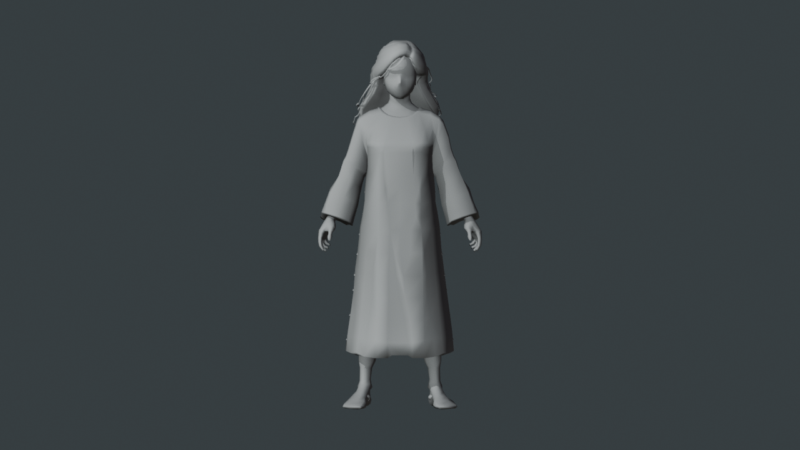
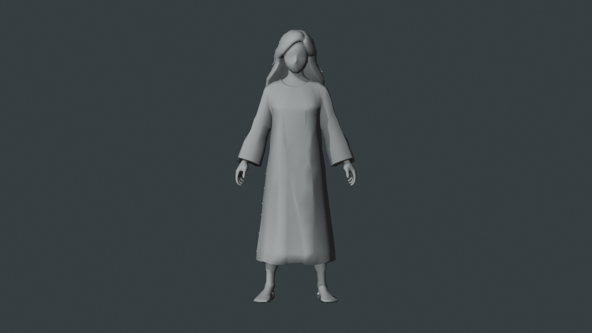
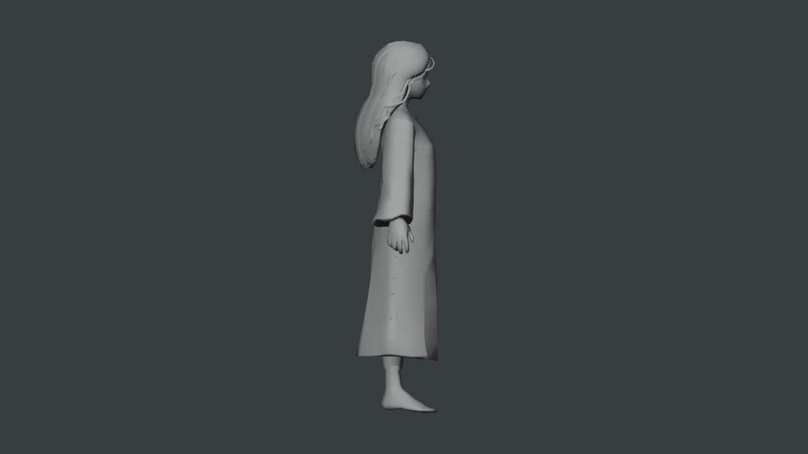
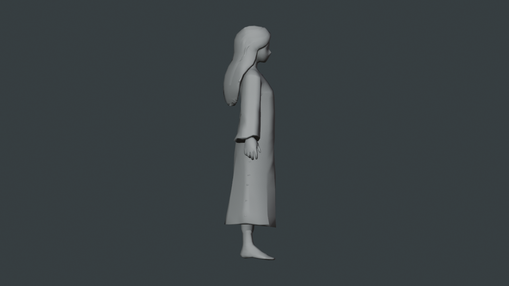
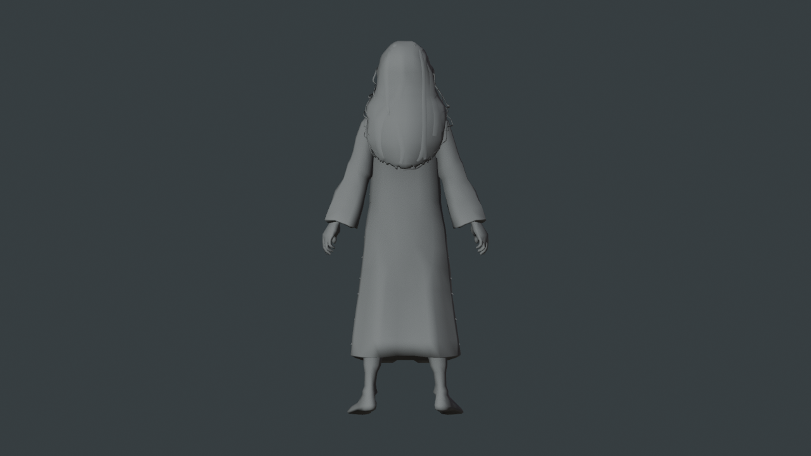
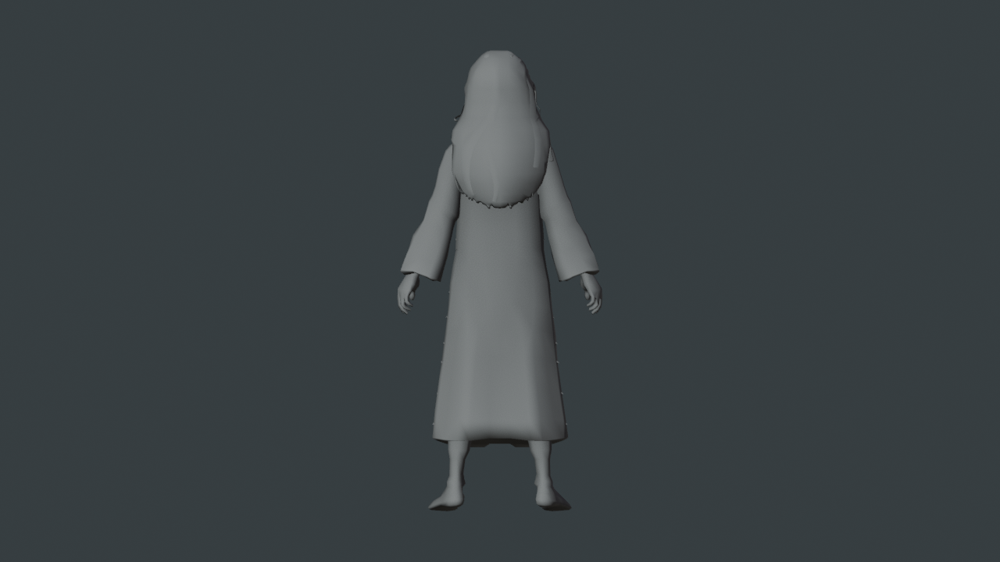
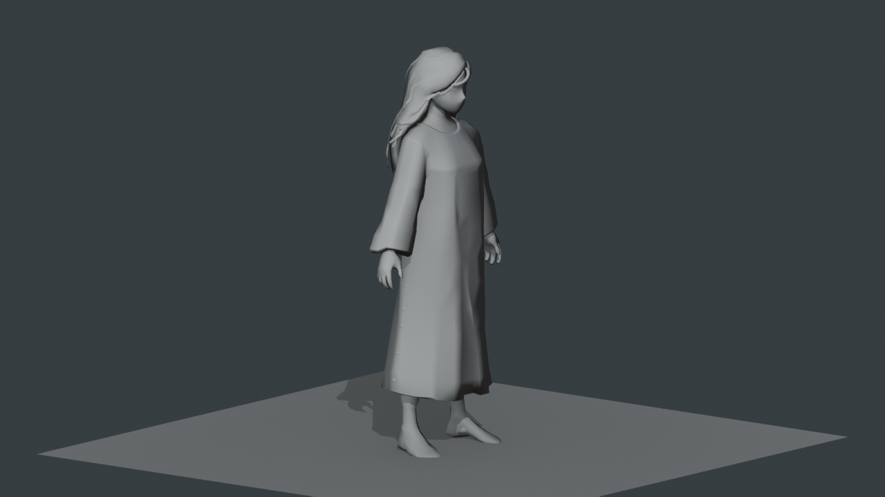
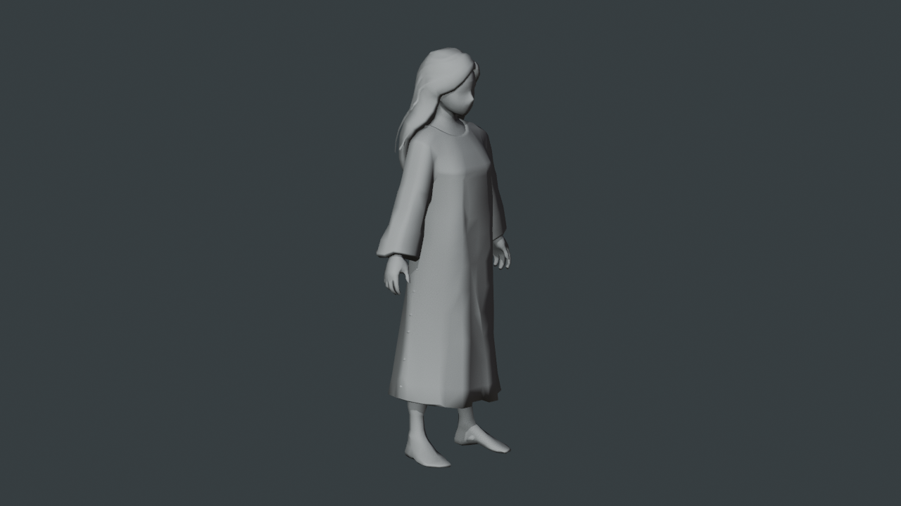
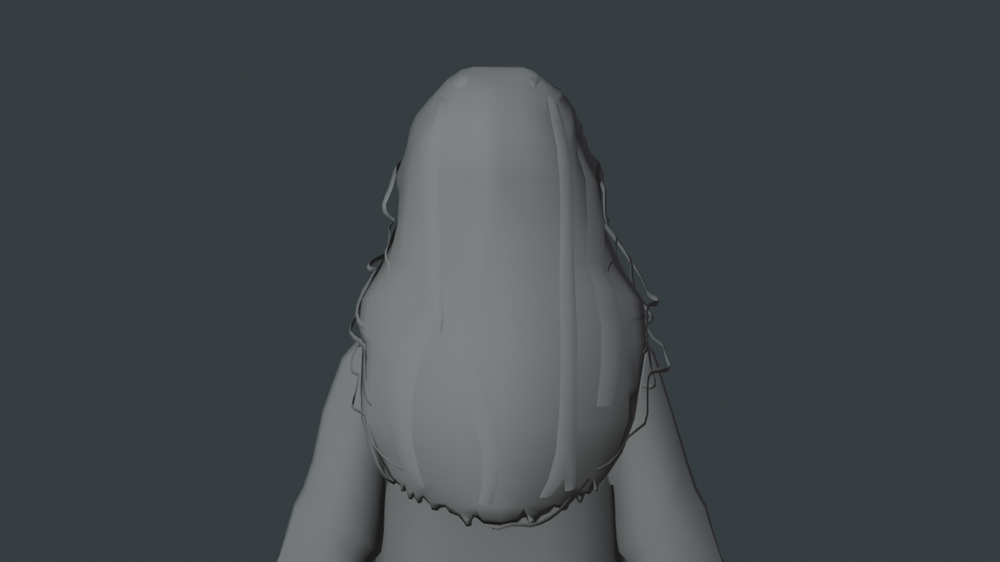
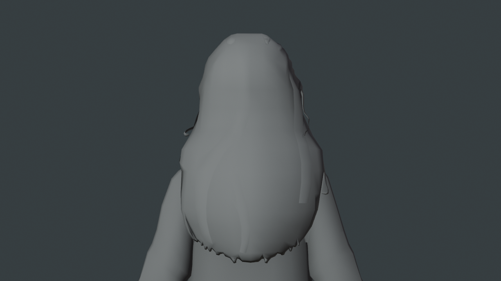

以国内版 P2.0 原始导出为基线，先验证能否通过有限清理继续使用。原始源保持。当前是待审候选，不代表UV、绑定或最终角色完成。
含修前修后的 Blender 工程 · 修整候选 GLB · 修改、检查与边界
已去掉底板、多数独立细卷丝和后脑窄发片；保留主要体块、原姿势、尺度及表面法线。主发边缘仍有少量细条与发尾锯齿，手脚仍是初稿精度。本轮未做UV、贴图或绑定，未再次生成。









